Omihachiman, Shiga: things to do, food and stays
Omihachiman · Shiga
Omihachiman
Highlighted on the Shiga map.

Stay
旅籠 八...
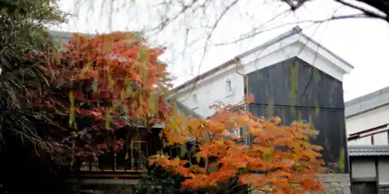
Hatago Hachi...
ホテルニューオウミ
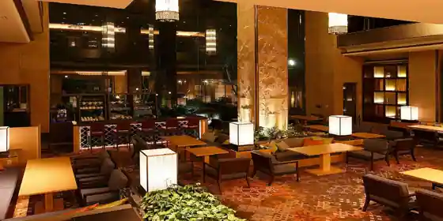
Hotel Nyuoumi
【グリーンホテルYes近江八幡】露天風呂 大浴場＆名物朝カレー
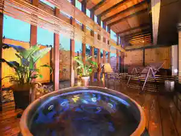
(Gurin Hotel Yes Omihachiman) Rotenburo Daiyokujo & Meibutsu Asa Kare
Hotel in Nakamura, Omihachiman with open-air baths and breakfast available.
ホテルはちまん
Hotel Hachiman
Hotel in Sakuranomiya, Omihachiman; 5-minute walk from Ipunokaitekisekkei!Omihachiman Station.
旅宿 信長と忍者(Guest House NOBUNAGA to NINJA)
Ryoshuku Nobunaga To Ninja (Guest House NOBUNAGA to NINJA)
旅宿ありときりぎりす(Guest House ARI to KIRIGIRISU)
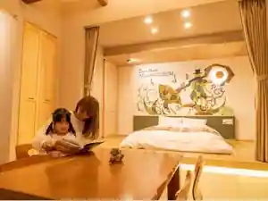
Ryoshuku Aritokirigirisu (Guest House ARI to KIRIGIRISU)
Inn in Shutsu, Omihachiman with open-air baths.
ＡＢホテル近江八幡
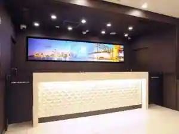
AB Hotel Omihachiman
Hotel in Takagai, Omihachiman with buffet meals and breakfast available.
コンフォートイン近江八幡
Konfotoin Omihachiman
Inn in Takagai, Omihachiman with parking; 2-minute walk from Omihachiman Station.
旅宿 月とかぐや(Guest House TSUKI to KAGUYA)
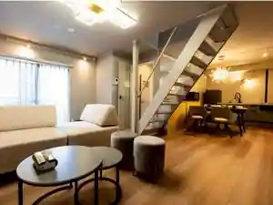
Ryoshuku Gatsu Tokaguya (Guest House TSUKI to KAGUYA)
ビジネス第一ホテル
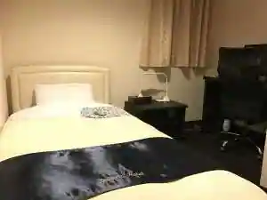
Business Daichi Hotel
Hotel in Hakucho, Omihachiman with business travelers.
近江八幡 まちや倶楽部（旧名称：MACHIYA INN近江八幡）
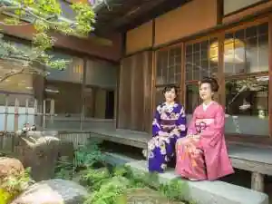
Omihachiman Machiya Kurabu (Kyumeisho : MACHIYA INN Omihachiman)
Inn in Nakaya, Omihachiman with a renovated traditional house.
Little Birds Hostel 近江八幡
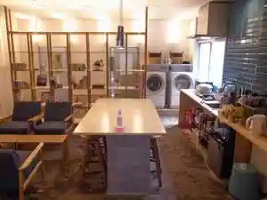
Little Birds Hostel Omihachiman
Dining
湖国料理 やまじん
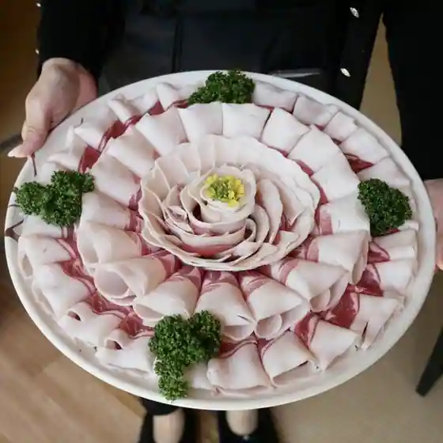
Mizumi Kuni Ryori Yamajin
ひさご寿し
Hisago Hisashi Shi
近江かね安
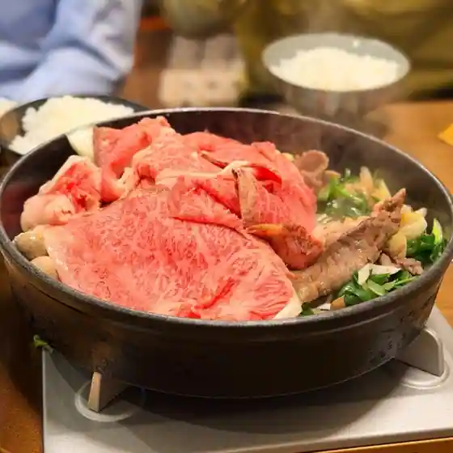
Omi Kane An
ラ コリーナ近江八幡
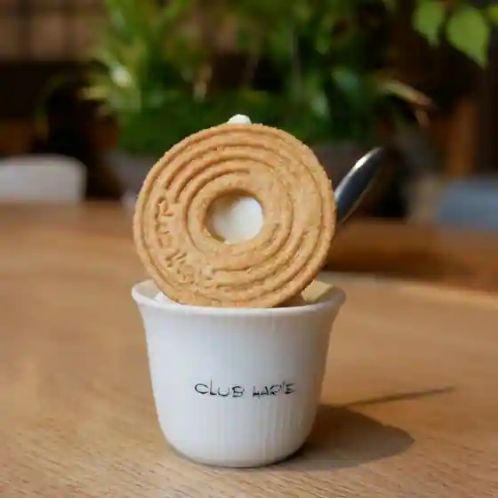
Ra Korina Omihachiman
特選近江牛レストラン ティファニー
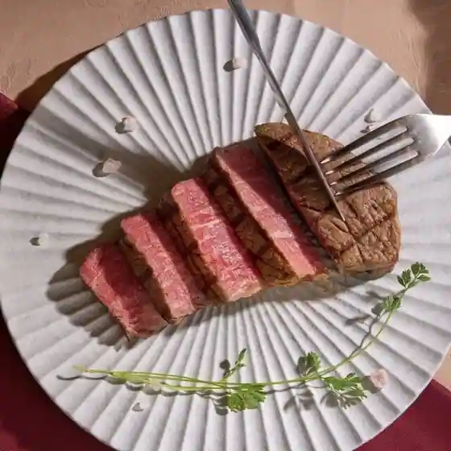
Tokusen Omi Ushi Restaurant Teifani
是的菜館
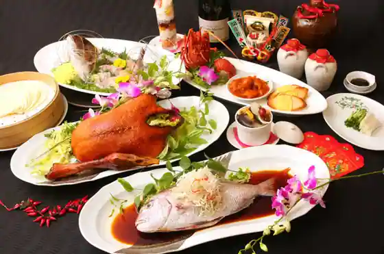
Kore Teki Saikan
カメチク
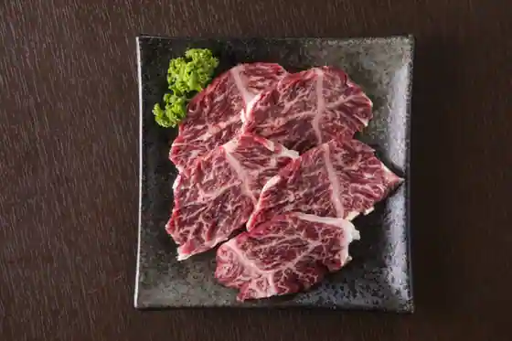
Kamechiku
バームファクトリー
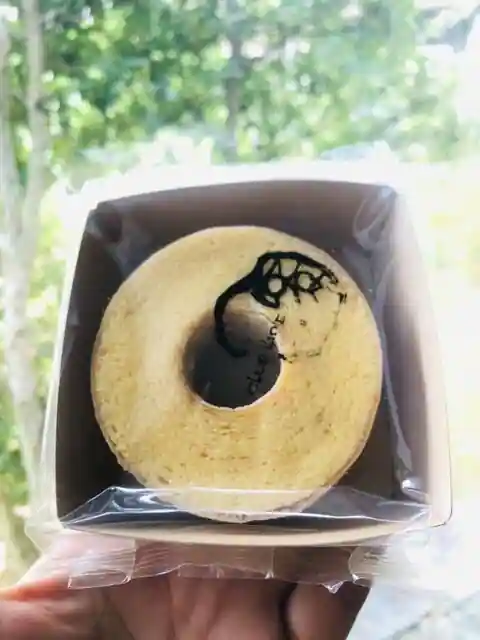
Bamufakutori
TABLE MOTHER
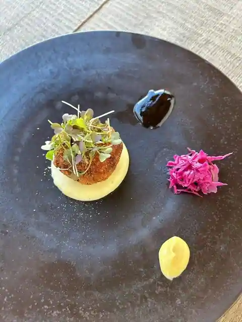
TABLE MOTHER
休暇村 近江八幡
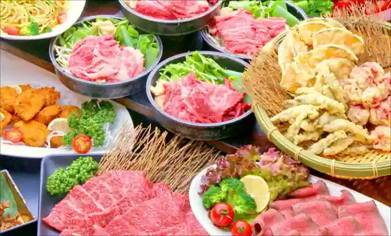
Kyukamura Omihachiman
魚石
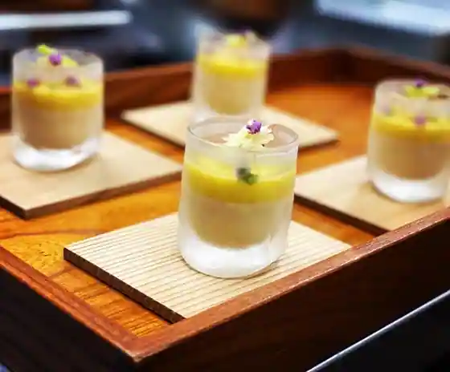
Sakana Ishi
囲炉裏料理わ
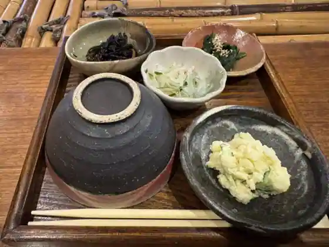
Irori Ryori Wa
ダコージ
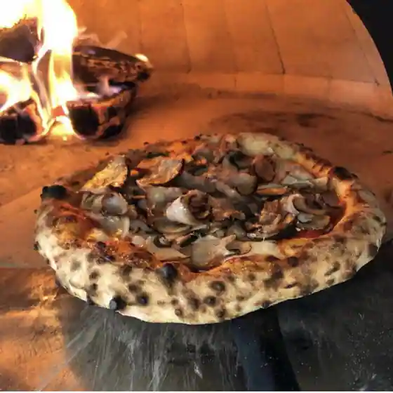
Dakoji
カステラショップ
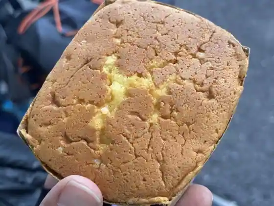
Kasuterashoppu
近江牛・和牛専門 寛閑観
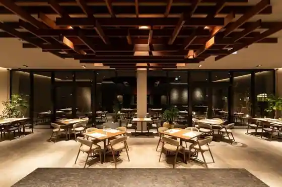
Omi Ushi Wagyu Senmon Hiroshi Hima Kan
まんぷく食堂
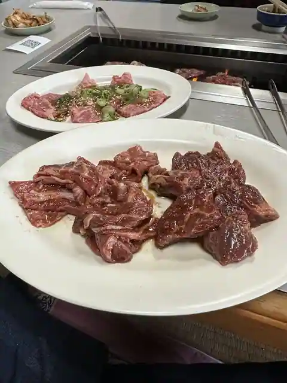
Manpuku Shokudo
炭櫓 近江八幡店
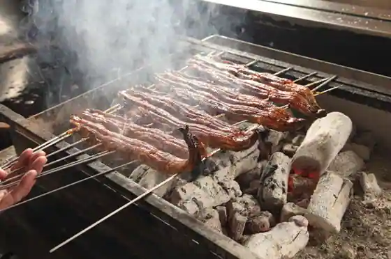
Sumi Yagura Omihachiman
麺庭 寺田屋 近江八幡店
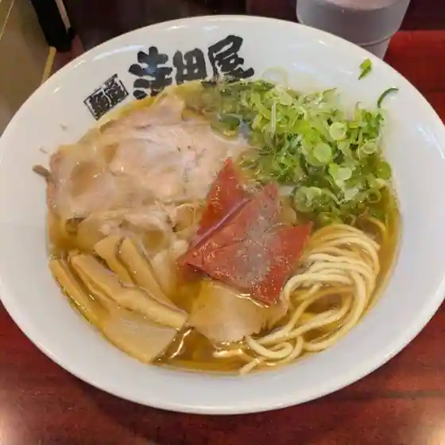
Men Niwa Terada Ya Omihachiman
壱製パン所
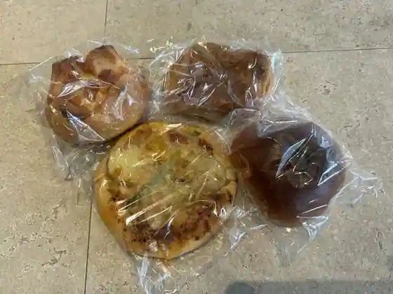
Ichi Sei Bakery Tokoro
旬菜旬魚 煌 近江八幡店
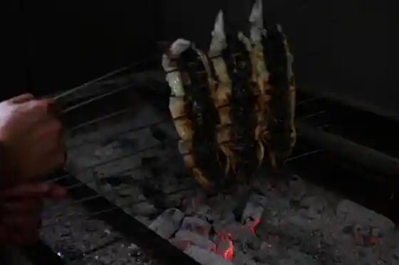
Jun Na Shungyo Ko Omihachiman
シャーレ水ヶ浜
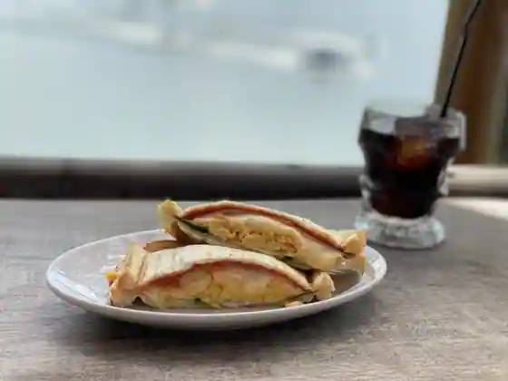
Share Mizu Ke Hama
とんかつ亭 天乃家
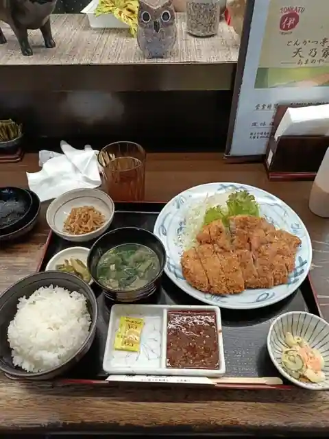
Tonkatsu Tei No Ie
近江牛 毛利志満 近江八幡本店
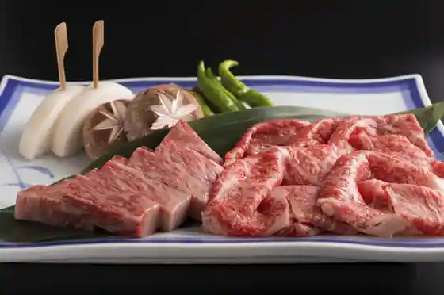
Omi Ushi Mori Shima Omihachiman Hon
まるたけ 近江 西川
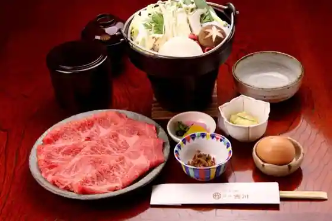
Marutake Omi Nishikawa
Sights
Oshima Okitsushima Shrine

Reisen Tera

Musa Yado Ato

Omihachiman Ritsu Sports Park

Omihachiman Ritsu Museum (Kyunishi Kawa Ie House)
Fukuju Tera
Sasaki Shrine
Kyuka Village Omihachiman
Oda Shrine
Ishi no Tera Kyo Hayashi Bo
Guriin Hotel Yes Omihachiman
Miyamae
Andoryusu Memorial Museum
Yoshida Etsuzo Tei (Ken Shitei Bunkazai Vorizu Kenchiku)
Nishi no Mizumi Meguri
Vorizu Memorial Museum
Hachiman Sha
Azuchi Castle Ruins
Daichu Kakimi Ichigo Sono
Okayama Castle Ruins
Mizukuki Yaki Togei Village
Suigo Meguri
Kyu Iba Ie House
Omi Kyodai Sha Mentamu Museum
Kyu Hachiman Yubinkyoku (Vorizu Kenchiku)
Kyu Han Ie House (Hachiman Kyoiku Hall)
Oku Ishi Shrine
Nishikawa Kaemon Shoten
KK Suigo no Sato
JR Eki Rentaka Omihachiman Eigyosho
Kamo Shrine
Kyuka Village Omihachiman Campground
Omi Ushi Kane Yoshiyama Hon
Nagamitsu Tera Castle Ruins
Hachiman Hori
Yahatayama Ropue (Biwako Kokutei Park)
Hotel Nyuomi
Ganjo Shu Tera
Jo Gen In
Nichi Mure Hachiman Shrine
Iwato Yama Jusan Hotoke
Omihachiman Ritsu Museum (Local History Museum)
TOYOTA SHARE Toyotarentaka Omihachiman Mise
Omihachiman Ritsu Museum (Folk History Museum)
Saiko Tera
Going Nuts!
Shingonshu Nagamitsu Tera
Zuiryu Tera (Mura Kumo Gosho)
Sen So Tomo Kofun Gun
Yahatayama Castle Ruins
Bungei Seminariyo
Shima Shinju Suigo Kankosen
Reauddobiizu Miki
Koshu Doro (Chomei Tera Shuhen)
Seminariyo Ato
JR Omihachiman Eki
Biwa Mizumi Kanko
Umami Oka Shrine
Go Fune Kannon Myoho Tera (Hachiman Hori Kanko Kyukei)
Kuwa Jitsu Tera (Kuwa Mine Kusurishi)
Hachiman Kutsu no Wafu Resutoran Hama Gura
Azuchijo Kaku Museum
Mizukuki Yaki Kaferesutoran
Uotahausu Memorial Museum
Enman Tera (Omihachiman)
Bodaresu Ato Museum NO-MA
Honganji Hachiman Betsuin (Kin Dai Tera)
Hakun Kan (Kyu Yahatahigashi Gakko)
Chomei Tera
Azuchi Marieto
Biwa Paru Saiki Sangyo
Omihachiman Wasen Kanko Kyodokumiai (Suigo Meguri)
Oki Shima
Hachiman Park
Shiga Prefectural Azuchijo Koko Museum
Omi Shonin no Streetscape (Shin Town Tori)
Omihachiman Culture Hall
Omi Fudoki no Oka
Kannon Sei Tera
Azuchijo Tenshu Nobunaga no Kan
Nishikawa Jingoro Honten Shiryo Kan
Hyotan Yama Burial Mound
Kawara Museum
Haido Memorial Museum
Nagamitsu Tera (Hana no Kitera)
Kannon Tera Castle Ruins
Hikiyama to I Kusa no Kan
Toyotarentariisu Shiga Omihachiman Mise
JR Azuchi Eki
Fuku Yuki Shima Benzaiten
Miyagahama Suiei Ba
Omihachiman Yakusho